Blog
News and articles about MindForger - one post per release, newest first.
You & MindForger: a comic
2026-09-20
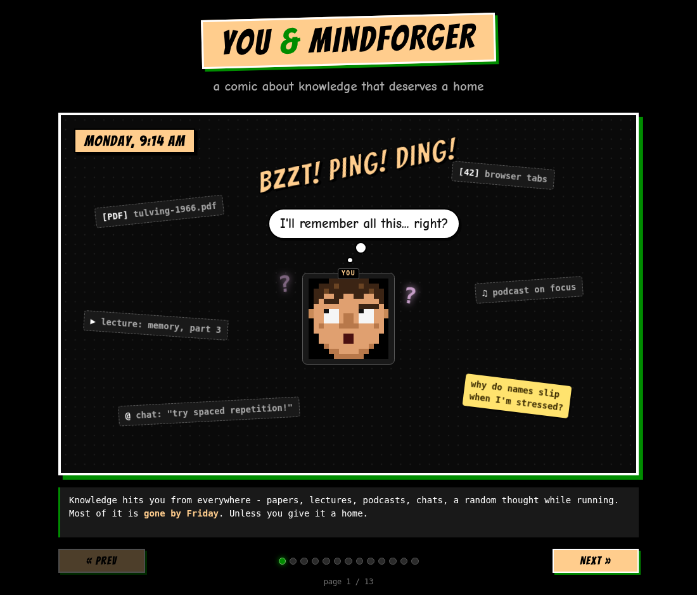
Knowledge hits you from everywhere - papers, lectures, podcasts, chats - and most of it is gone by Friday, unless you give it a home. To explain what MindForger is about without a wall of text, I turned the idea into a comic: meet You & MindForger - it follows one confused knowledge worker from the chaos of browser tabs and sticky notes, through typed Notes, outlines, notebooks and shelves, Kanban and the Eisenhower matrix, private AI and finding what he wrote weeks ago, all the way to a thinking notebook that is private, free and his. Read the comic!
Nerdview for the MindForger documentation
2026-09-19
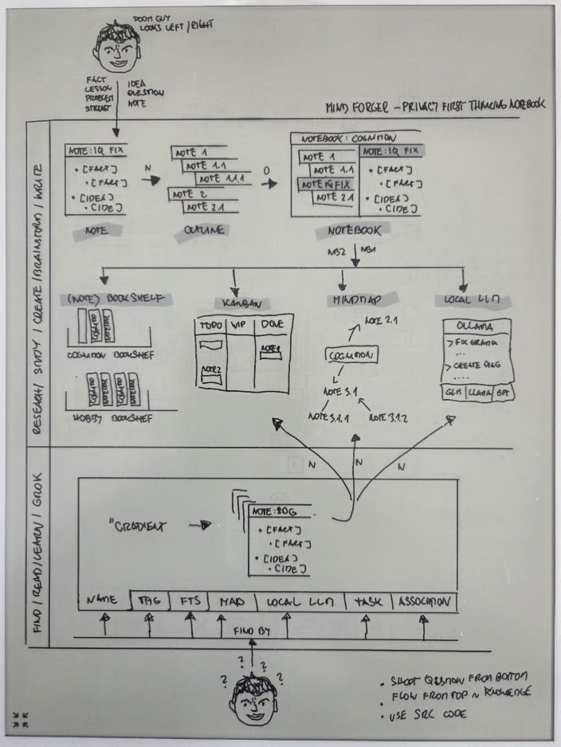
To have some fun I prepared MindForger functional architecture overview diagram. I used my beloved SuperNote Yoda to sketch the diagram and then turned it to the animated diagram which is now available as Nerdview on the web.
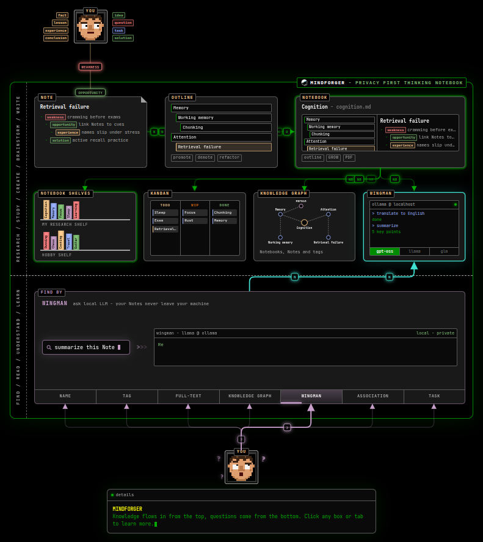
The diagram is animated - it shows the flow and how ideas, facts, experiences ... are turned to Notes, Notes to Notebooks with the outline, then organized to (note)book shelves and browsed in the knowledge graph, kanban and/or processed by Wingman.
MindForger 2.2.0: Rewrap, Snap, WebEngine, KaTeX and Mermaid
2026-09-13 | release on GitHub
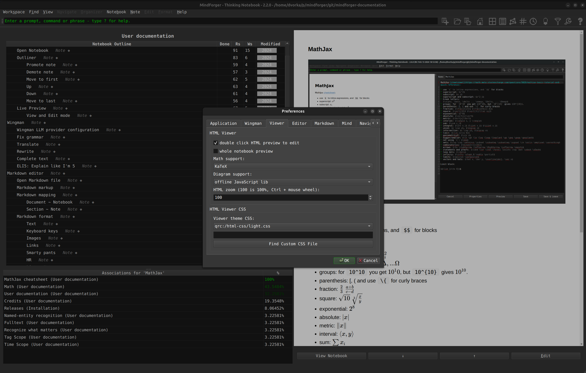
MindForger is getting back in shape! This minor release brings significant stabilization and performance improvements, which MindForger has desperately needed for some time. I fixed long standing bugs and accelerated Markdown to HTML rendering. I switched MindForger from the legacy, slow, and fragile HTML rendering engine (QtWebKit fork abandoned in 2018 which I kept for Linux distro backward compatibility) to the latest and greatest one (QtWebEngine) which has been used by Windows and macOS for years. I also fixed and sped up math, source code, and diagrams rendering by switching to SOTA libraries, upgrading to the latest versions and fixing what was broken.
- Editation
Rewrap Paragraphfills the paragraph/rewraps the paragraph under the cursor to 80 columns.- Easily add emojis by clicking associated button when adding new Notebook/Note or editing Notebook/Note name or description.
- Markdown to HTML rendering
- Qt WebEngine, which is ~8x faster than Qt WebKit, is newly default HTML rendering backend on Linux as it already was on Windows and macOS.
- Math support now offers KaTeX (fast, offline @ QT resources included MF binary) and MathJax (legacy, upgraded, offline) instead of online CDN dependency.
- Offline Mermaid diagram rendering works again - mermaid.js was not registered as a Qt resource, so it always silently failed. Online option removed.
- Autolinking
- Colors of autolinking generated Note/Outline interlinks are in blue.
- Bare http(s):// URLs containing Markdown-special characters (e.g. '_') got backslash-escaped by the autolinking preprocessor's Markdown round-trip which corrupted the result - fixed by verbatim using CommonMark's <...>.
- Snap
- Menu/toolbar icons are no longer missing in the strict Snap.
MindForger 2.1.0: Snap, Autolinking colorization and Wingman
2026-09-03 | release on GitHub
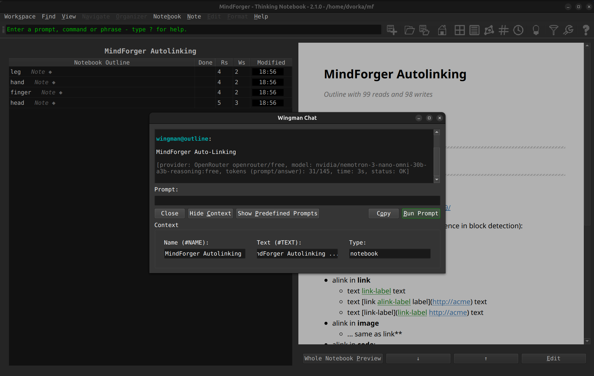
This minor MindForger release brings improved autolinking, Snap distribution, new local large language models providers, various fixes and small enhancements:
- Autolinking
- Manual links are newly rendered in a different color than autolinker created links.
- Snap
- Install MindForger either from the snapcraft.io (strict confinement) or by downloading the
.snap(classic confinement).
- Install MindForger either from the snapcraft.io (strict confinement) or by downloading the
- Wingman:
- Added Ollama as local LLM provider (privacy) and OpenRouter as new remote LLM provider (100s of SOTA models).
- Fixes and enhancements:
- Check various minor fixes and enhancements.
MindForger 2.0.0: Wingman, Notebooks Tree and Libraries
2024-02-16 | release on GitHub
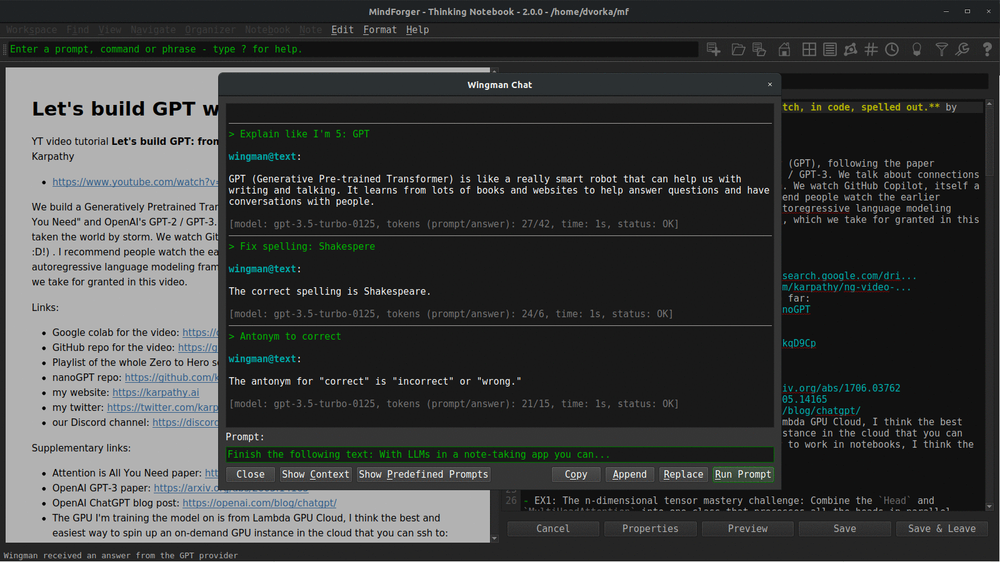
This major MindForger release brings wingman, notebooks tree and libraries:
- Wingman:
- Wingman is MindForger's integration with large language models which brings note-taking and knowledge management to the next level. MindForger newly allows you to easily expand your notes and knowledge by leveraging the power of artificial intelligence. Whether you need to prepare a plan, write an in-depth analysis, draft a blog post, or simply generate ideas. Large language model can fix grammar, translate, write, reformulate summarize, suggest synonyms and antonyms, and much more. You can effortlessly generate high-quality content, and enhance the organization of your knowledge.
- Notebooks tree:
- With Notebooks tree, you can organize notebooks in a tree (outline) just like notes in notebooks.
- By using a tree-like structure, you can organize your notebooks in a logical and hierarchical manner, similar to how folders and subfolders organize files on a computer. This allows you to break down your knowledge into smaller, more manageable chunks and helps you find and access specific information easily.
- Structuring notebooks to form a tree promotes better organization and clarity. You can create a top-level notebook, representing a broad topic or category, and then create sub-notebooks within it to represent more specific subtopics or subcategories. This hierarchical arrangement enables you to maintain a clear overview of your knowledge and facilitates navigation within your notebooks.
- Libraries:
- Library (directory with files) bring ability to index external PDF files and generate Notebooks which represent them in MindForger.
- The notebook representing the PDF allows easy access to the PDF notebook. Notebook can be used to write ideas, thoughts and remarks related to the PDF document.
- Synchronization of the library is supported as well.
- Web search
- Find knowledge for a term under the cursor, selected in the text or notebook/note name, on the internet: Wikipedia, arXiv, GitHub, or StackOverflow.
- Fixes and enhancements:
- Check also other minor fixes and enhancements.
MindForger 1.54.0: Smart(er) Markdown editor and macOS fixes
2022-03-07 | release on GitHub
This MindForger release brings smart(er) Markdown editor and significantly improved macOS version:
- smart(er) editor:
{[("'~completion- bulleted task lists completion
- automatic bulleted and numbered lists indentation on ENTER
- multi-line code fences completion
- TAB indentation to SPACE @ TAB multiple
- selected block of text rigid left/right move with TAB/Shift-TAB
- improved macOS version:
- from Linux style to macOS style application and Markdown editor shortcuts
- added new menu shortcuts for actions like new Notebook and Note refactoring
- main window is not wider than screen on the application boot
- polished MindForger logo and menu
icnsicons (transparency) - dark look & feel theme used by default
- Qt downgraded from 5.9.9 (security, macOS only)
- loss of data prevention:
RD_ONLYfile detection with warning- click to a preview link while editing opens dialog allowing to save changes
- reviewed non-repository (Markdown file or directory mode) UI ensures that MindForger repository specific actions are not available and unsupported (meta)data cannot be lost
- UX:
- Page up, Page down, Home and End navigation in Notebook, Notes and Recent tables
- Kanban and Eisenhower matrix selection model and navigation allow at most one row selection
- Kanban and Eisenhower items can be moved around columns with keyboard shortcuts
- view/edit bottom buttons work even if "double-click to edit" is disabled
- toolbar is not hidden on window minimization and visibility preferences are correctly persisted in the configuration
- Emacs editor keybinding enhancements: ^-y, alt-w, ^-w and alt-d
- Vim keybinding removal
- various other minor fixes and enhancements.
MindForger 1.53.0: Spell check + Kanban and Eisenhower Matrix on tags + CSV OHE export + µ terminal
2021-12-26 | release on GitHub
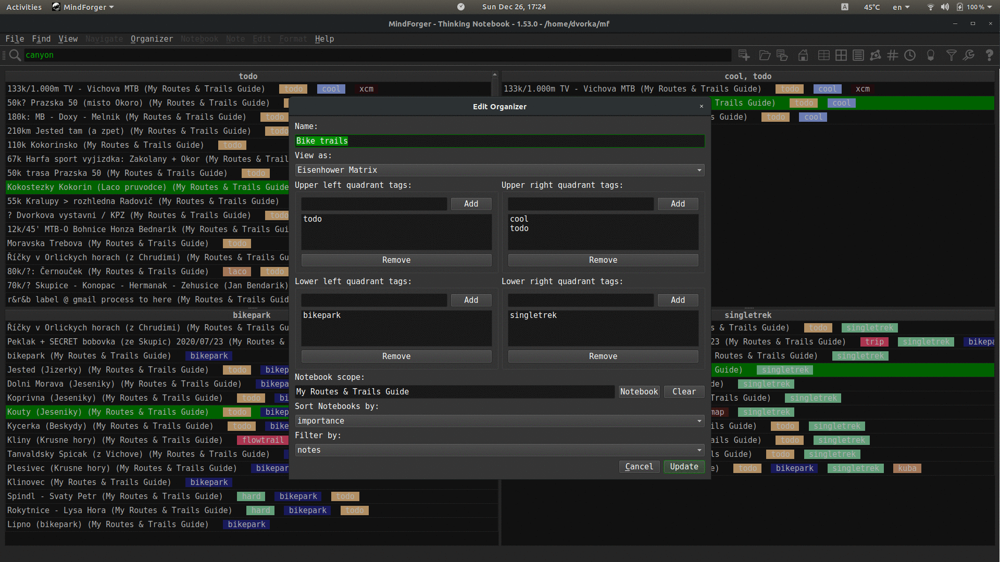
This major MindForger release brings:
- Hunspell-based spell checking 👁
- Kanban style organizer of notebooks and/or notes on tags allowing you to plan and structure your learning 👁
- Eisenhower Matrix organizer of notebooks and/or notes on tags to assess priorities
- ability to edit notes with external editor, WYSIWYG or tool 👁
- CSV notes export with one-hot-encoded tags which can be used to build machine learning models for your remarks or any set of Markdown documents 👁
- minimal terminal allowing you to run commands directly from MindForger e.g. to push your knowledge to a Git repository or to run external applications
- configuration of custom CSS for Markdown to HTML rendering in viewer 👁
- repository specific configuration
- lazy (PDF) documents indexation POC
- various minor fixes and enhancements
MindForger 1.52.0: Autolinking and macOS enhancements
2020-03-08 | release on GitHub
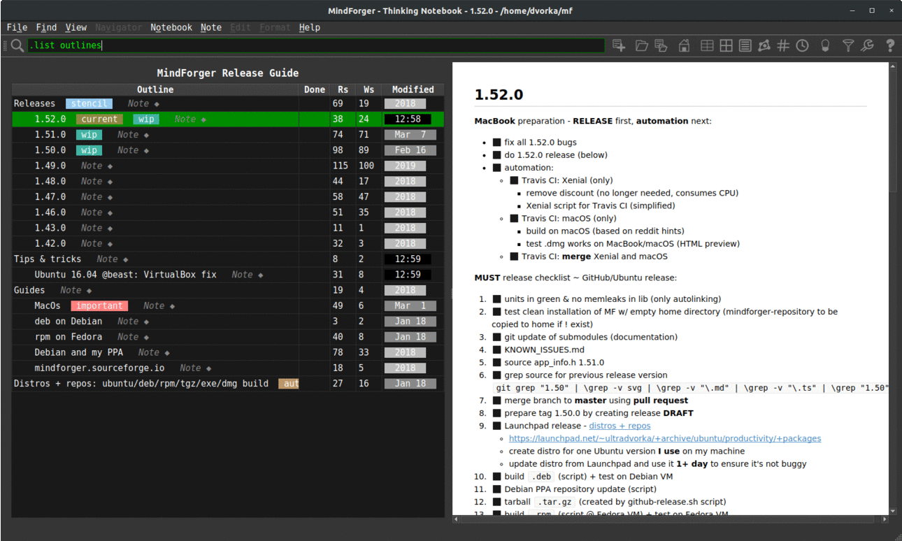
This major MindForger release brings:
- long awaited autolinking
- macOS enhancements
- several minor fixes and improvements.
Autolinking (automatic interlinking) injects links (Notebooks and Notes names ~ Markdown document names and section names) to your remarks. Released implementation is cmark-gfm and Trie based to achieve desired performance and ensure autolinked Markdown format integrity. It can be further improvement with additional research (like hierarchical/scope centric multi-link selection) and implementation enhancements (like Aho-Corasic text search).
Shortcuts, drag & drop and ability to paste image (even an image selection) improved on macOS. Big thanks to Petr Kozelka who borrowed MacBook to improve and fix macOS implementation!
MindForger 1.51.0: Live preview
2020-02-17 | release on GitHub
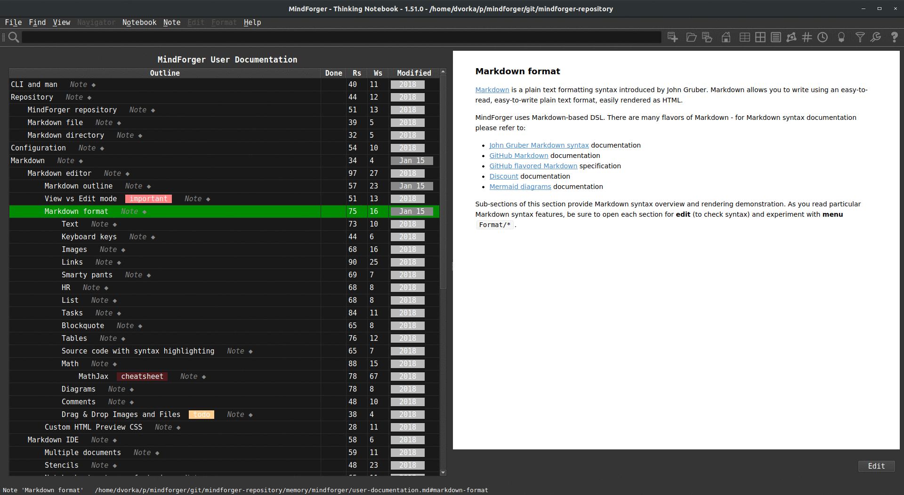
This MindForger release brings:
- Live preview of notes which is rendered as you write.
- Persistent Notebooks table sorting (column and order).
- Whole Notebook preview when switched to hoist mode.
- Improved Mermaid diagram support.
... and various minor improvements and fixes.
MindForger 1.50.0: Dashboard, link completion, image drag & drop, FTS & toolbar revamp
2020-01-18 | release on GitHub
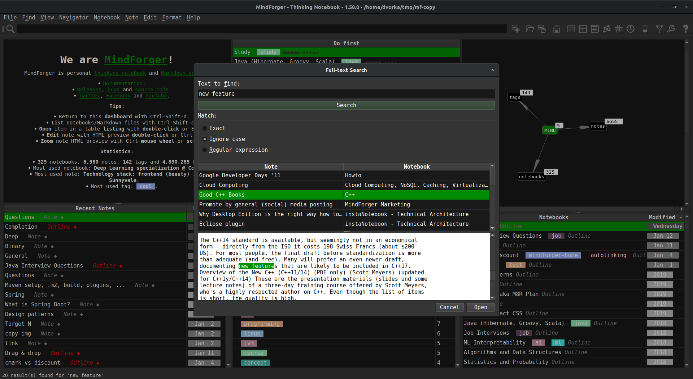
This major MindForger release brings:
- new Dashboard view
- FTS revamp
- drag&drop of images and attachments with copy to repository
- CLI in toolbar
- Notebook and Note link completion on Ctrl+/
- persistent hoist mode
- new icons sets for menu and toolbar
... several bug fixes and usability enhancements.
I want to thank MindForger users for feedback, bug reports and constructive critics! Enjoy this new release!
MindForger 1.49.0: Microsoft Windows and GitHub Flavored Markdown
2019-03-03 | release on GitHub
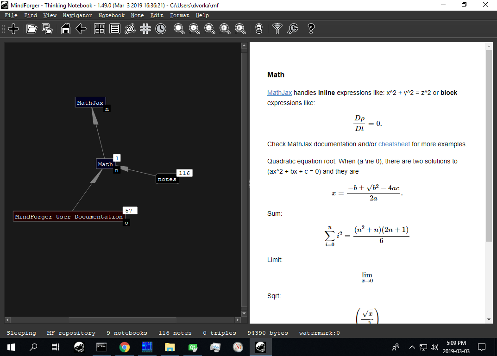
This major release brings native Microsoft Windows port of MindForger and support of GitHub Flavored Markdown (via replacement of Discount with mark-gfm - GitHub's fork of cmark, a CommonMark parsing and rendering library).
Big thanks to bonitoo.io and Ivan Kudibal who decided to contribute to MindForger - kudos to Vlasta Šaman Hájek who ported MindForger to Microsoft Windows in one month!
MindForger 1.48.0: CSV Export, MathJax Menu and Autolinking Preview
2018-11-10 | release on GitHub
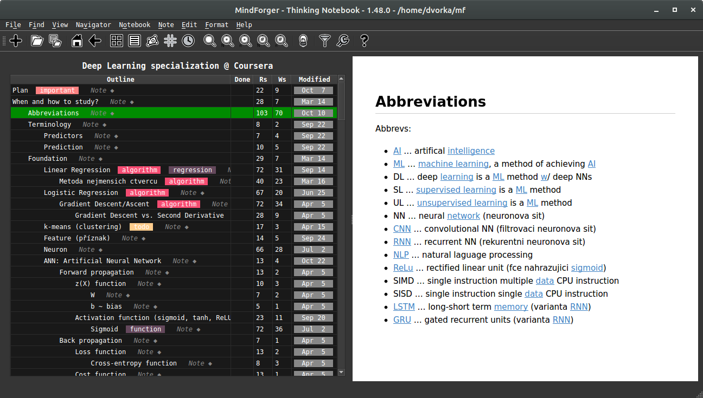
This MindForger release brings CSV export, MathJax menu, HTML zooming and autolinking preview. CSV export enables AI/ML/DS analysis of your remarks. MathJax menu aims to significantly improve your productivity when writing mathematical expressions. Autolinking is an experimental feature which automatically turns you plain text notes to hypertext while your browse them. Autolinking automatically discovers notes across your repository with the right title and creates links (just for view, note is not changed).
MindForger 1.47.0: Knowledge Graph Navigator
2018-10-02 | release on GitHub
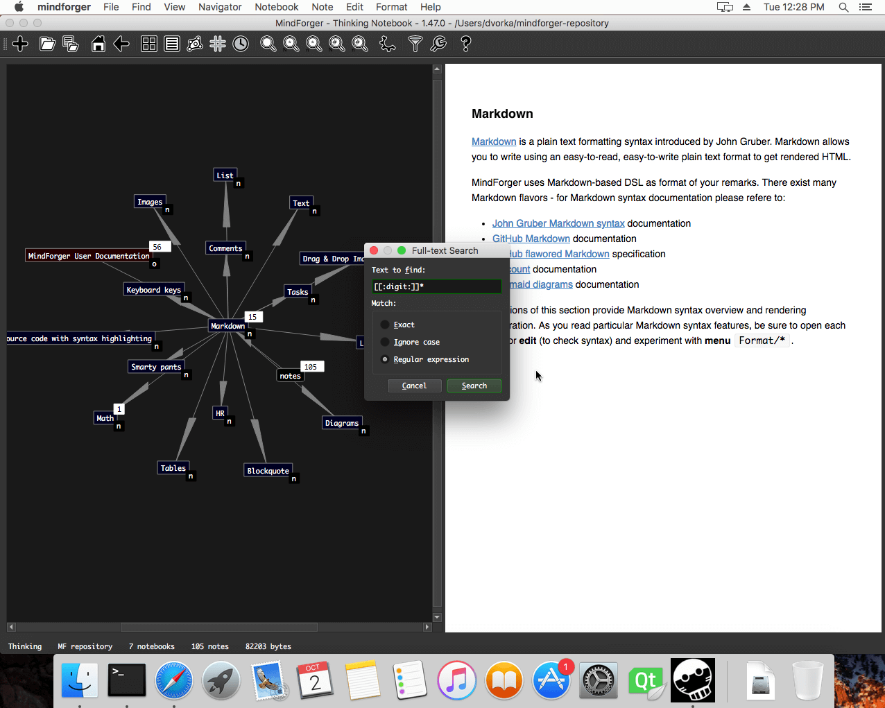
This major MindForger release brings knowledge graph navigator (video), full-text search with regular expressions, HTML notebook export, TWiki document import, Docker-based distribution, significant improvements in recent notes and asynchronous associations.
{kind=link}
MindForger 1.46.0: Standard Terminology and Toolbar
2018-09-02 | release on GitHub

This release aims to improve MindForger usability. Terminology has been changed from nerd-style terms to commonly used naming. Newly added toolbar will make MindForger use much easier. In addition it lays the foundation for visual knowledge navigator. I also fixed several issues - both in frontend and backend.
MindForger 1.43.0: Eisenhower Matrix, Tags View and Recent Notes
2018-07-10 | release on GitHub

This MindForger release brings Eisenhower matrix, tags view, recent notes view and updated documentation. In addition it lays the foundation for named-entity recognition (NER) and knowledge graph navigator. I also fixed several issues - both in frontend and backend (parsing huge repositories).
MindForger 1.42.0: Initial MindForger Release
2018-05-30 | release on GitHub
I am happy to announce the first release of MindForger - the 4th generation of my thinking notebook. Rethought, redesigned and rewritten from scratch it becomes the tool I was dreaming about for years.
Although it's the first release, it brings several unique features and there is much more to come.
I didn't choose the date randomly - MindForger is released on the day of my 42nd birthday... and yes, it can confirm answer to the Ultimate Question of life, the Universe, and Everything!
Stay tuned - distribution/platform support, new features and demos will be releases in the upcoming weeks.
Computers Need To Forget
2007-11-16 | original post | labels: cognition, memory, mind
A Harvard professor argues that too much information is being retained by computers, and the machines need to learn how to forget things as humans always have. "If whatever we do can be held against us years later, if all our impulsive comments are preserved, they can easily be combined into a composite picture of ourselves," he writes in the paper.
This is exactly the idea I have in my mind for some time. Having installed the same system for three years and looking to my desktop, downloaded documents, mailbox and mind maps I can see how it is spoiled and contaminated by zombie items.
The purpose of computers is to remember everything. Actually I think that human brain remembers every single piece of information as well (cognition, experience, perception). Human beings just differ in ability to look up the particular "thing" - it's there, but an appropriate stimulus that triggers the association queue is needed (scent, sensual perception, event).
The right question to ask is "What does it mean to forget?"
In my opinion it is a function of the mind that protects it from madness. Presume that your memory is a graph - "things" are nodes and associations are edges (pretty common model). There is an entry node. A new stimulus is put right behind the entry node. As the stimulus get older and older it dives deeper and deeper. If there are no fresh associations which would keep it near enough to the entry node, it is forgot. Say that the distance is defined as number of hops from entry node to the stimulus node and there is some threshold (let me call it Rubicon). The piece of information is forgot once the distance from the entry is is bigger then Rubicon.
The same approach could be applied to computers...
- Imagine that there is hades - an underground where old bookmarks, applications, emails and mind maps stay.
- Once the application is not used for some time, it gets across Rubicon and ends in hades, the same applies to emails and comments which are not read, etc.
- The important thing is that e.g. icons @ desktop are not deleted (like windows icon sweep offers), but just moved to hades, and might be rescued later.
- If you search "live" part of the system, hades is searched as well. You might ask system to union live and hades icons on your desktop, etc.
- If you use GMail, you know I mean ;-)
In other words I just wanted to say: "to forget doesn't mean to delete". Does it make sense?